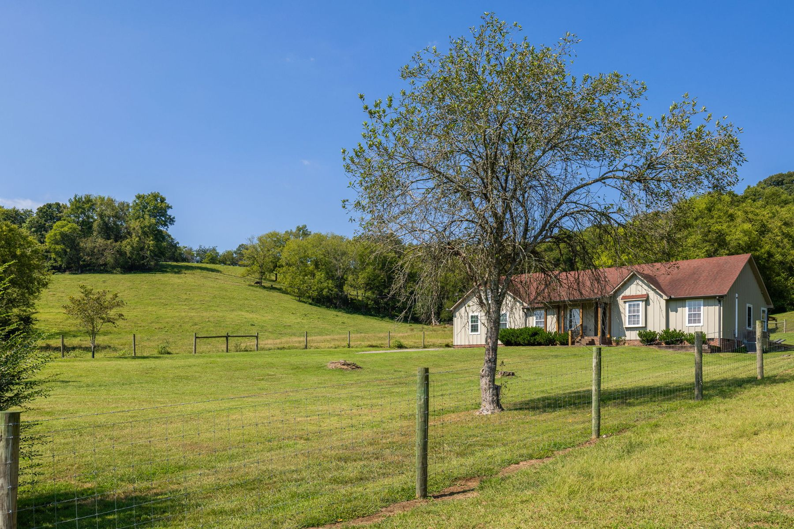
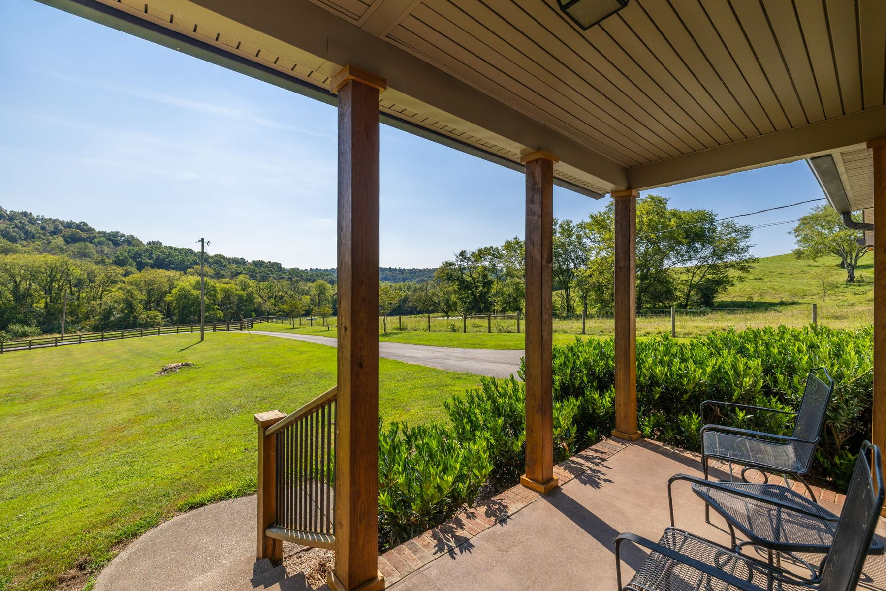
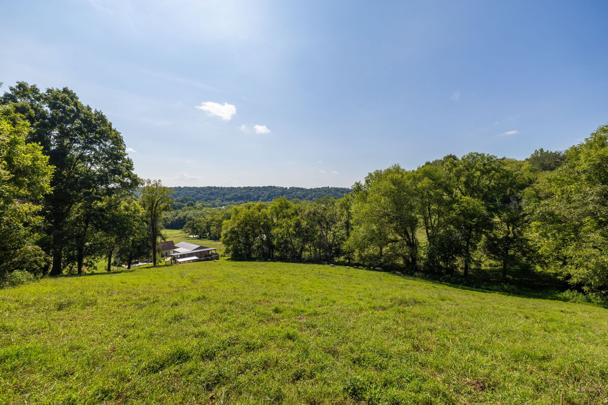
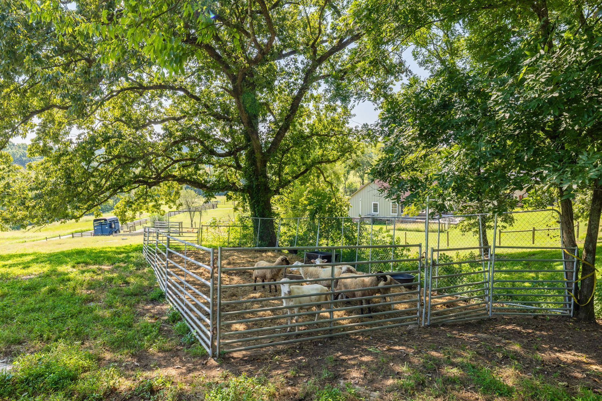
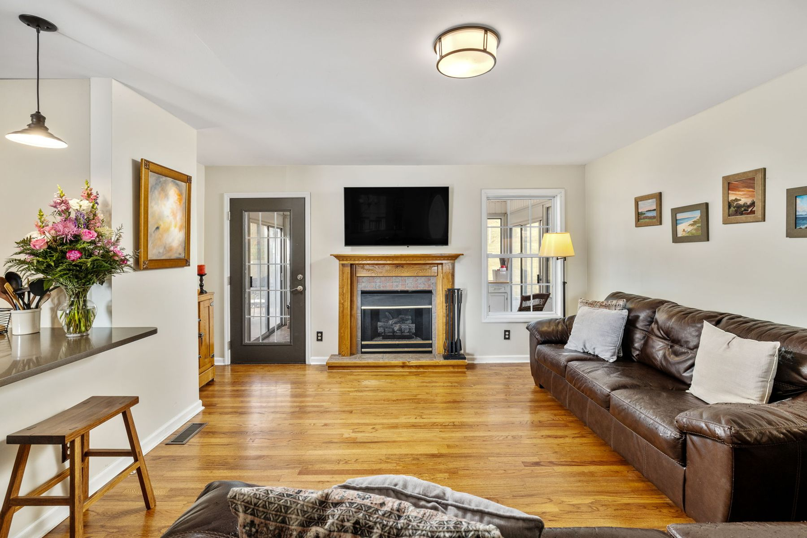
4283 Turkey Creek Rd
Williamsport, Tennessee 38401 · Maury County
- 15 MINTO Square
- 20 MINTO Leipers Fork
- 5 ACLOT
- 1997year built
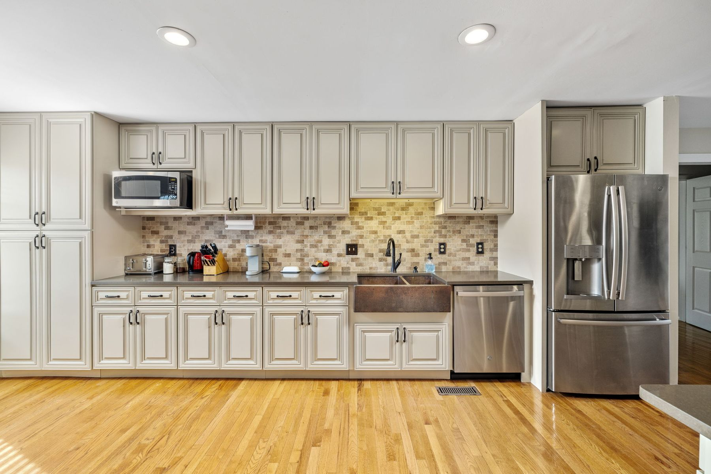
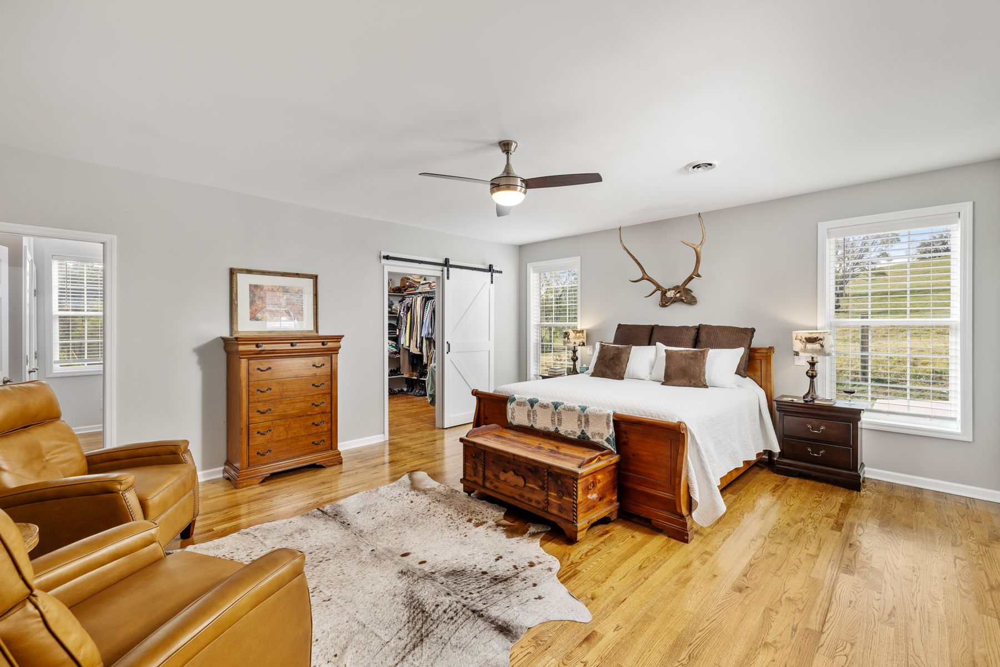
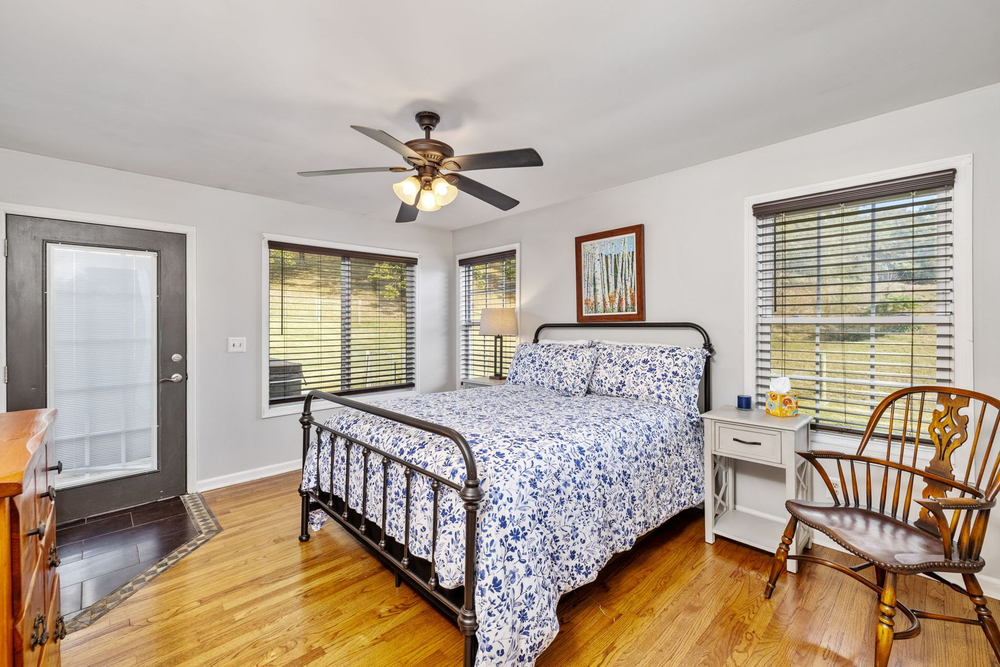
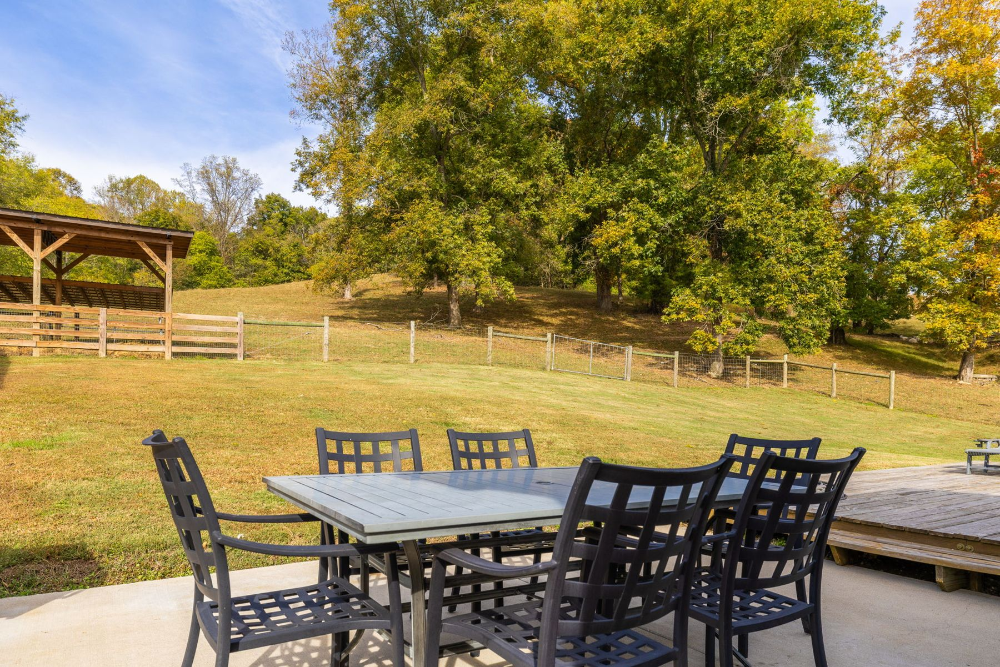
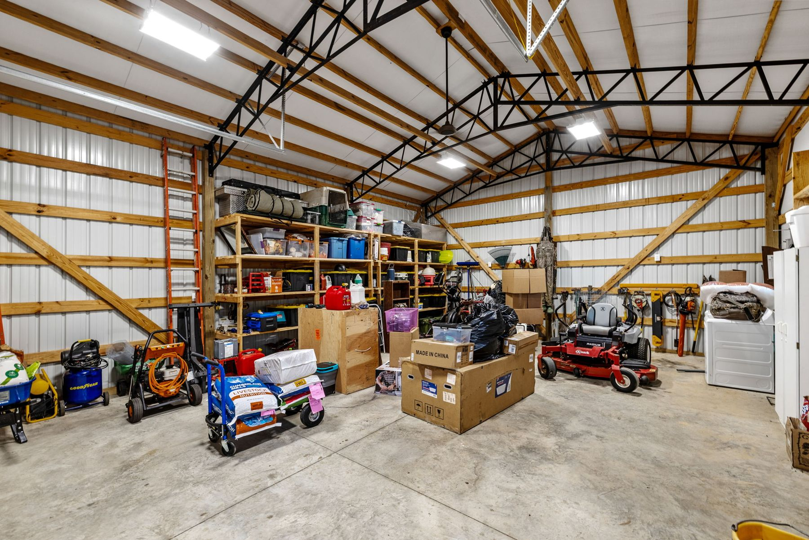
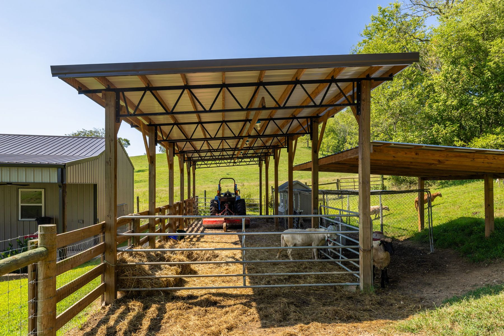
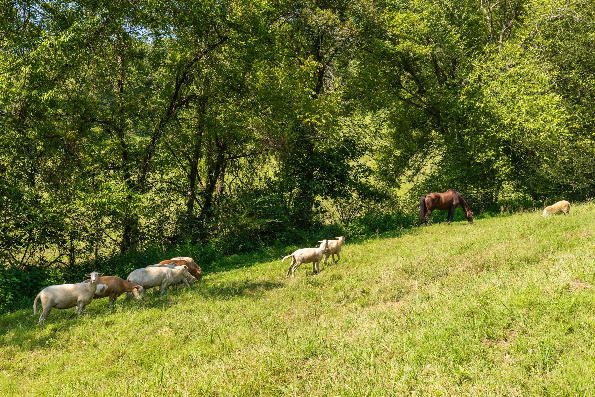
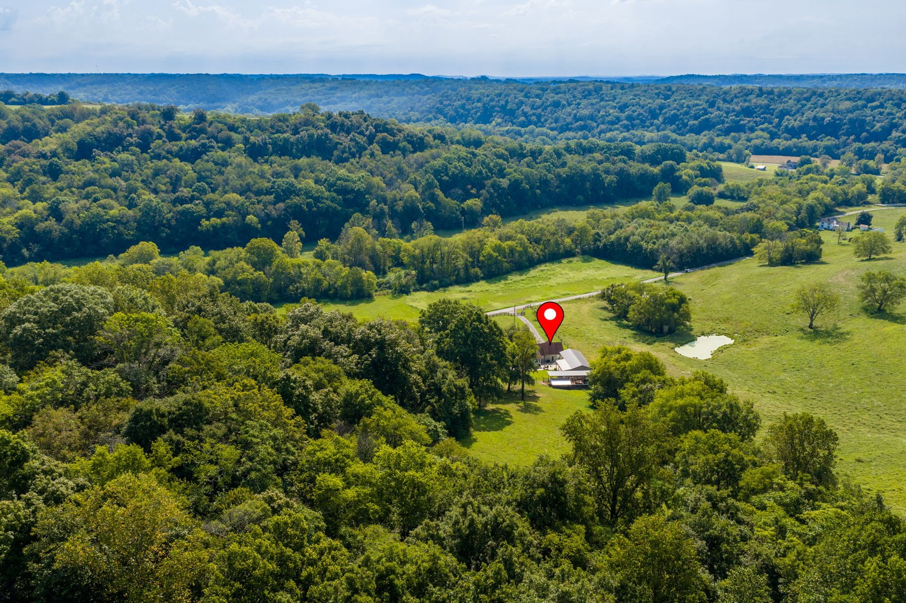
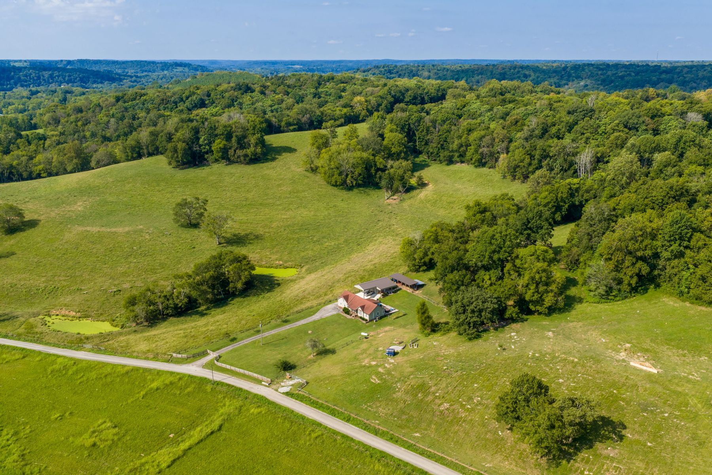
I've walked a lot of acreage. This one has a spring, a pond, a cave, and a gate that closes out the road.Aaron Scott
5 acres in Williamsport, Maury County, Tennessee
4283 Turkey Creek Rd sits on about five acres in the Maury County countryside, right on the line between Williamsport and Columbia, Tennessee. A gate opens to a long paved drive. Rolling pasture and wooded hillside run out from the house, and the land holds a natural spring with a waterfall, a pond and a cave. You get sunrise from one side and sunset from the other.
The 1997 home has four bedrooms and three full baths, every bedroom on the main level and two of them ensuite. Hardwoods throughout, a gas-log fireplace with a carved mantel, and a kitchen with a copper farmhouse sink, quartz counters and a floor-to-ceiling pantry. The second suite has its own stone shower and an outside entrance. Upstairs is a bonus room. The sunroom opens to the deck, the patio and the swim-spa hot tub.
Walk it on film
Every photo
67 photos · tap to enlargeThe details
The basics
- Price
- $729,000
- Bedrooms
- 4
- Baths
- 3
- Size
- 2,300 sq ft
- Acreage
- About 5 acres
- Built
- 1997
- County
- Maury County, Tennessee
The home
- Bedrooms
- 4, all on the main level, 2 ensuite
- Baths
- 3 full
- Kitchen
- Copper farmhouse sink, gas cooktop, wall oven, quartz, floor-to-ceiling pantry
- Primary suite
- Double sized walk-in closet, remodeled bath with frameless glass shower
- Second suite
- Stone shower and its own outside entrance
- Extra space
- Upstairs bonus/media room, enclosed sunroom, room to add on
- Outdoor living
- Deck, patio and swim-spa hot tub
- Water features
- Natural spring with waterfall, pond
The land and more
- Also
- A cave
- Pasture
- Cross-fenced with board and field fence
- Shop
- New detached insulated metal garage/shop, roll-up door, covered porch with fans
- Barn
- Steel-truss livestock shed, drive-through carport
- Entry
- Gated, long paved drive
- Utilities
- City water, septic, dual central heat and air
- HOA
- None · Taxes: $1,217 a year
- Schools
- Santa Fe Unit School · MLS 3628592
Where it sits
Williamsport is farm country in Maury County, right on the Columbia line. Columbia Square and Spring Hill are about 15 minutes away, Leipers Fork about 20.
If you want to explore what it's like to move to Middle Tennessee, I've learned a lot helping families do it. You'll find it at 1aaronscott.com. If rates are part of the decision, The Rate Mirror shows what a rate change does to a budget.
- 15 MINTO Square
- 20 MINTO Leipers Fork